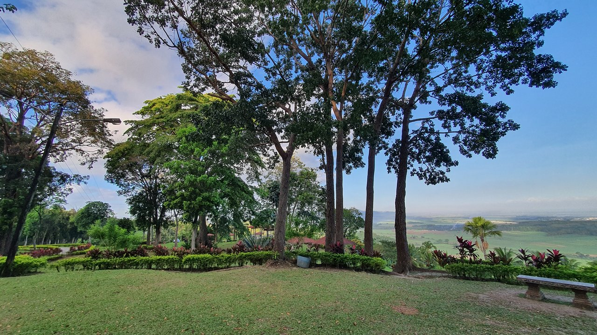

Balicaocao Highland Resort

Balicaocao Eco Park is nestled on a hill with an epic panoramic view of Kabankalan City and nearby towns. Located in Barangay Orong, Balicaocao is just a short 25-minute bumpy ride from the highway. There are some motorcycles for hire when you get to the junction along the highway.
It is a perfect place for a picnic with family and friends.